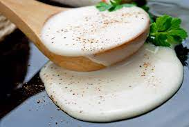

Como hacer la salsa Bechamel

La salsa Bechamel es una de las recetas básicas que te ayudarán
a preparar muchos otros platos, como los gratinados, los canelones y la lasaña o el pasticho
.Aquí te dejamos los pasos para lograr la salsa Bechamel para el pasticho.
Ingredientes para la salsa Bechamel
- 1 vaso de leche
- 4 cucharadas soperas de harina de trigo
- 4 cucharadas soperas de mantequilla
- 1 cucharadita de nuez moscada
- 1 pizca de sal
Pasos a seguir
- Hacer la salsa Bechamel es fácil. Lo primero que tienes que hacer es alistar los ingredientes.
Ten en cuenta que la cantidad de harina puede variar, la idea es conseguir que la salsa
quede ligeramente espesa.
- Coloca en una olla la leche junto con la nuez moscada,sal,harina y mantequilla. LLeva a fuego
medio y revuelve.
- Revuelve bien la mezcla y baja el fuego. El secreto de una buena salsa
bechamel es cocinar removiendo de forma constante
- Continua con el proceso por unos 10 minutos y corrige con un poco más de harina
si ves que la salsa no toma la consistencia deseada. No importa si quedan pequeños grumos
en la salsa.
- Una vez lista, podrás reservar aparte y utilizar la salsa bechamel para
hacer un pasticho delicioso. Puedes hacer el típico pasticho y si prefieres, también la puedes
usar para hacer un pastel de berenjena